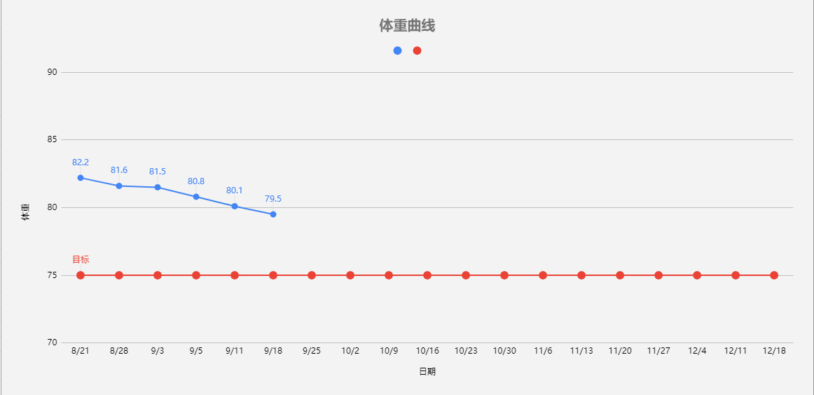

Preface
没有钱，总得有个好身体不是
Tables
Theory
公式：（10x83kg）+（6.25x171cm）-（5x35）+5
830 1068.75 175
最低摄入卡路里：～1728
基本热量值：1728x1.5=2592热量累积7700大卡，体重增加一公斤
必须减少摄取的总热量 =13公斤 × 7700 = 100100大卡
每天必须减少摄食的热量 = 100100 ÷ 80 = 1251大卡
每天必须摄取的热量 = 2592 - 1251= 1341大卡
碳水：134g 蛋白：134g 脂肪：30g 比例：4:4:2
https://www.zhihu.com/question/289060470
Attetions
- 早上吃好 中午吃饱 晚上吃少的原则
- 每天中午100～150g米饭 晚上50～100g米饭,鱼肉可以吃200g,鸡肉 牛肉 100～150g
- 内脏不吃
- 有糖分的饮料 奶 一律不喝
- 馋了就喝零度可乐 或者 无糖雪碧
- 烧烤 火锅 炸物 减肥期间 建议戒断
Schedule
- 每天早起来称重后 然后就去空腹快走 走个半小时，一般来说 每公里10分钟以内就算快走了，心率控制在130以内，身体允许的话 可以做一些冲刺最大心率到150左右
- 一周锻炼5天 休息两天，不要集中休息，比如锻炼3天 休息一天这样
Target
80 day , 12 kg
Progress
打卡处:
| 日期 | 记录 | 体重 | 状态 |
|---|---|---|---|
| 2019-8-21 | 上午: 空腹慢跑 07:38 - 08:05 ； 早餐:1蛋黄，3蛋白，温开水 其他摄入: 苦咖啡一杯约200ml+20-30ml纯牛奶，浓茶半杯 午餐：米饭100g左右，香干15片左右，鸡肉估计50g左右，青瓜炒蛋20g左右 饭后慢走2km 晚餐：白菜50g，鸡丁10g，鳝鱼6小段，青豆15颗左右，有点饿 |
82.2kg | 有点累 主要是晚上睡太晚 |
| 2019-8-22 | 早上没有跑步，因为昨晚睡眠不好，晚上23：40左右上床，胡思乱想到1点多，最起码得保证7个钟头的睡眠时间。 早餐：红薯100g，包子2个，蛋黄1个，蛋白1个半，稀饭约3小口，咖啡+牛奶一杯，水一杯 午餐:莲藕100g 米饭100g 荷兰豆50g 咖啡+牛奶 250ml，水一杯，茶2杯 |
晚上老胡思乱想，心里屁事太多 |
体重曲线变化
